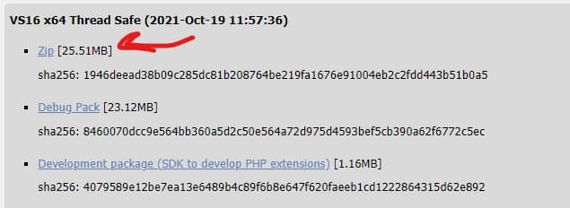
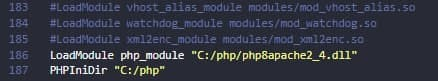

Установка WEB-серверу
1. Зайти на сайт https://www.apachelounge.com/download/ и скачать данный установщик:

2. Создать директорию, где будет размещаться Apache и разархивировать установщик
3. Зайти на сайт https://windows.php.net/download и скачать zip-архив с установщиком:

4. Создаём директорию, где будет размещён php и разархивируем zip-архив
5. Проводим начальную конфигурацию, указывая каталог с подключаемыми расширениями для php:
Находим строчку ;extension_dir = "ext" и переделываем её на следующую: extension_dir = "C:\php\ext"
6. Теперь проведем конфигурацию Apache, чтобы связать его с ранее установленным PHP:
Открываем данный файл:
Прописываем путь к модулю php, который предназначенный для работы с apache

Cоздаём директорию, где будет храниться наш сайт по пути c:\localhost и связываем её с apache:
Прописываем директорию для размещения ошибок
Прописываем путь к директории, куда заносятся все данные о посещении веб-сайта
Меняем имя сайта
Добавляем поддержку для файлов с расширением .php и .phps.
Определяем главные страницы веб-сайта: index.html и index.php.
7. Устанавливаем веб-сервер в качестве службы
Для этого запустим командную строку Windows от имени администратора и установим Apache в качестве службы с помощью команды: C:\Apache24\bin\httpd.exe -k install
После установки службы убедимся, что она запущена
Зворотній зв`язок. Выдображення дати
Висновки
Під час даної лабораторної роботи був встановлений веб-сервер Apache та інтерпретатор PHP для роботи із мовою програмування PHP. У звітному документі була детально покроково описана послідовність установки та налаштування ПЗ.
Для перевірки роботи веб-серверу, у кореневу папку були завантажені файли нашого сайту, який був потім відображений на сторінці браузера після введення у пошуковий рядок localhost. Для перевірки роботи php був створений простий скрипт, який займався обробкою форм та повертав дані після підтвердження форми.